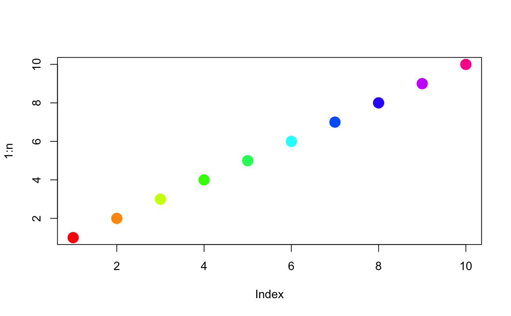

ExperimentColorMap class
ExperimentColorMap(assays = list(), colData = list(), rowData = list(), all_discrete = list(assays = NULL, colData = NULL, rowData = NULL), all_continuous = list(assays = NULL, colData = NULL, rowData = NULL), global_discrete = NULL, global_continuous = NULL, ...)
| assays | List of colormaps for |
|---|---|
| colData | List of colormaps for |
| rowData | List of colormaps for |
| all_discrete | Colormaps applied to all undefined
categorical |
| all_continuous | Colormaps applied to all undefined
continuous |
| global_discrete | Colormap applied to all undefined categorical covariates. |
| global_continuous | Colormap applied to all undefined continuous covariates. |
| ... | additional arguments passed on to the |
An object of class ExperimentColorMap
Colormaps must all be functions that take at least one argument: the number
of (named) colours to return as a character vector.
This argument may be ignored in the body of the colormap function
to produce constant colormaps.
The default categorical colormap emulates the default ggplot2 categorical color palette (Credit: https://stackoverflow.com/questions/8197559/emulate-ggplot2-default-color-palette). This palette returns a set of colors sampled in steps of equal size that correspond to approximately equal perceptual changes in color:
function(n) {
hues=seq(15, 375, length=(n + 1))
hcl(h=hues, l=65, c=100)[seq_len(n)]
}
To change the palette for all categorical variables,
users must supply a colormap that returns a similar value;
namely, an unnamed character vector of length n.
For instance, using the base R palette rainbow.colors
function(n) {
rainbow(n)
}
In the following code snippets, x is an ExperimentColorMap object.
If the colormap can not immediately be found in the appropriate slot,
discrete is a logical(1) that indicates
whether the default colormap returned should be categorical TRUE or continuous (FALSE, default).
assayColorMap(x, i, ..., discrete=FALSE):Get an assays colormap.
colDataColorMap(x, i, ..., discrete=FALSE):Get a colData colormap.
rowDataColorMap(x, i, ..., discrete=FALSE):Get a rowData colormap.
In the following code snippets, x is an ExperimentColorMap object,
and i is a character or numeric index.
assayColorMap(x, i, ...) <- value:Set an assays colormap.
colDataColorMap(x, i, ...) <- value:Set a colData colormap.
rowDataColorMap(x, i, ...) <- value:Set a rowData colormap.
assay(x, i, ...) <- value:Alias. Set an assays colormap.
# Example colormaps ---- count_colors <- function(n){ c("black", "brown", "red", "orange", "yellow") } fpkm_colors <- viridis::inferno tpm_colors <- viridis::plasma qc_color_fun <- function(n){ qc_colors <- c("forestgreen", "firebrick1") names(qc_colors) <- c("Y", "N") return(qc_colors) } # Constructor ---- ecm <- ExperimentColorMap( assays=list( counts=count_colors, tophat_counts=count_colors, cufflinks_fpkm=fpkm_colors, rsem_tpm=tpm_colors ), colData=list( passes_qc_checks_s=qc_color_fun ) ) # Accessors ---- # assay colormaps assayColorMap(ecm, "logcounts") # [undefined --> default]#> function (n, alpha = 1, begin = 0, end = 1, direction = 1, option = "D") #> { #> if (begin < 0 | begin > 1 | end < 0 | end > 1) { #> stop("begin and end must be in [0,1]") #> } #> if (abs(direction) != 1) { #> stop("direction must be 1 or -1") #> } #> if (direction == -1) { #> tmp <- begin #> begin <- end #> end <- tmp #> } #> option <- switch(EXPR = option, A = "A", magma = "A", B = "B", #> inferno = "B", C = "C", plasma = "C", D = "D", viridis = "D", #> E = "E", cividis = "E", { #> warning(paste0("Option '", option, "' does not exist. Defaulting to 'viridis'.")) #> "D" #> }) #> map <- viridisLite::viridis.map[viridisLite::viridis.map$opt == #> option, ] #> map_cols <- grDevices::rgb(map$R, map$G, map$B) #> fn_cols <- grDevices::colorRamp(map_cols, space = "Lab", #> interpolate = "spline") #> cols <- fn_cols(seq(begin, end, length.out = n))/255 #> grDevices::rgb(cols[, 1], cols[, 2], cols[, 3], alpha = alpha) #> } #> <bytecode: 0x180fcf48> #> <environment: namespace:viridisLite>assayColorMap(ecm, "counts")#> function(n){ #> c("black", "brown", "red", "orange", "yellow") #> } #> <environment: 0x234c5920>assayColorMap(ecm, "cufflinks_fpkm")#> function (n, alpha = 1, begin = 0, end = 1, direction = 1) #> { #> viridis(n, alpha, begin, end, direction, option = "inferno") #> } #> <bytecode: 0x239f1fc8> #> <environment: namespace:viridisLite>assay(ecm, "cufflinks_fpkm") # alias#> function (n, alpha = 1, begin = 0, end = 1, direction = 1) #> { #> viridis(n, alpha, begin, end, direction, option = "inferno") #> } #> <bytecode: 0x239f1fc8> #> <environment: namespace:viridisLite># colData colormaps colDataColorMap(ecm, "passes_qc_checks_s")#> function(n){ #> qc_colors <- c("forestgreen", "firebrick1") #> names(qc_colors) <- c("Y", "N") #> return(qc_colors) #> } #> <environment: 0x234c5920>colDataColorMap(ecm, "undefined")#> function (n, alpha = 1, begin = 0, end = 1, direction = 1, option = "D") #> { #> if (begin < 0 | begin > 1 | end < 0 | end > 1) { #> stop("begin and end must be in [0,1]") #> } #> if (abs(direction) != 1) { #> stop("direction must be 1 or -1") #> } #> if (direction == -1) { #> tmp <- begin #> begin <- end #> end <- tmp #> } #> option <- switch(EXPR = option, A = "A", magma = "A", B = "B", #> inferno = "B", C = "C", plasma = "C", D = "D", viridis = "D", #> E = "E", cividis = "E", { #> warning(paste0("Option '", option, "' does not exist. Defaulting to 'viridis'.")) #> "D" #> }) #> map <- viridisLite::viridis.map[viridisLite::viridis.map$opt == #> option, ] #> map_cols <- grDevices::rgb(map$R, map$G, map$B) #> fn_cols <- grDevices::colorRamp(map_cols, space = "Lab", #> interpolate = "spline") #> cols <- fn_cols(seq(begin, end, length.out = n))/255 #> grDevices::rgb(cols[, 1], cols[, 2], cols[, 3], alpha = alpha) #> } #> <bytecode: 0x180fcf48> #> <environment: namespace:viridisLite># rowData colormaps rowDataColorMap(ecm, "undefined")#> function (n, alpha = 1, begin = 0, end = 1, direction = 1, option = "D") #> { #> if (begin < 0 | begin > 1 | end < 0 | end > 1) { #> stop("begin and end must be in [0,1]") #> } #> if (abs(direction) != 1) { #> stop("direction must be 1 or -1") #> } #> if (direction == -1) { #> tmp <- begin #> begin <- end #> end <- tmp #> } #> option <- switch(EXPR = option, A = "A", magma = "A", B = "B", #> inferno = "B", C = "C", plasma = "C", D = "D", viridis = "D", #> E = "E", cividis = "E", { #> warning(paste0("Option '", option, "' does not exist. Defaulting to 'viridis'.")) #> "D" #> }) #> map <- viridisLite::viridis.map[viridisLite::viridis.map$opt == #> option, ] #> map_cols <- grDevices::rgb(map$R, map$G, map$B) #> fn_cols <- grDevices::colorRamp(map_cols, space = "Lab", #> interpolate = "spline") #> cols <- fn_cols(seq(begin, end, length.out = n))/255 #> grDevices::rgb(cols[, 1], cols[, 2], cols[, 3], alpha = alpha) #> } #> <bytecode: 0x180fcf48> #> <environment: namespace:viridisLite># generic accessors assays(ecm)#> $counts #> function(n){ #> c("black", "brown", "red", "orange", "yellow") #> } #> <environment: 0x234c5920> #> #> $tophat_counts #> function(n){ #> c("black", "brown", "red", "orange", "yellow") #> } #> <environment: 0x234c5920> #> #> $cufflinks_fpkm #> function (n, alpha = 1, begin = 0, end = 1, direction = 1) #> { #> viridis(n, alpha, begin, end, direction, option = "inferno") #> } #> <bytecode: 0x239f1fc8> #> <environment: namespace:viridisLite> #> #> $rsem_tpm #> function (n, alpha = 1, begin = 0, end = 1, direction = 1) #> { #> viridis(n, alpha, begin, end, direction, option = "plasma") #> } #> <bytecode: 0x23a36ea0> #> <environment: namespace:viridisLite> #>assayNames(ecm)#> [1] "counts" "tophat_counts" "cufflinks_fpkm" "rsem_tpm"# Setters ---- assayColorMap(ecm, "counts") <- function(n){c("blue", "white", "red")} assay(ecm, 1) <- function(n){c("blue", "white", "red")} colDataColorMap(ecm, "passes_qc_checks_s") <- function(n){NULL} rowDataColorMap(ecm, "undefined") <- function(n){NULL} # Categorical colormaps ---- # Override all discrete colormaps using the base rainbow palette ecm <- ExperimentColorMap(global_discrete = rainbow) n <- 10 plot(1:n, col=assayColorMap(ecm, "undefined", discrete = TRUE)(n), pch=20, cex=3)